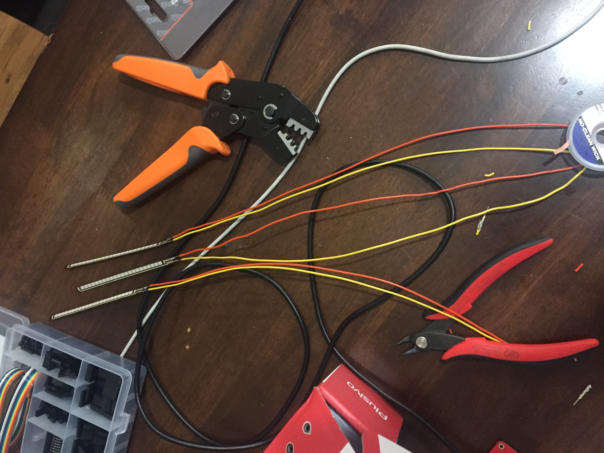
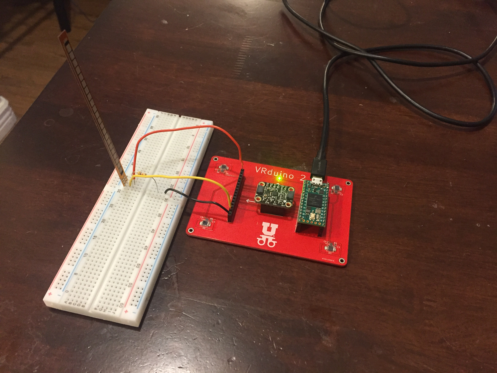
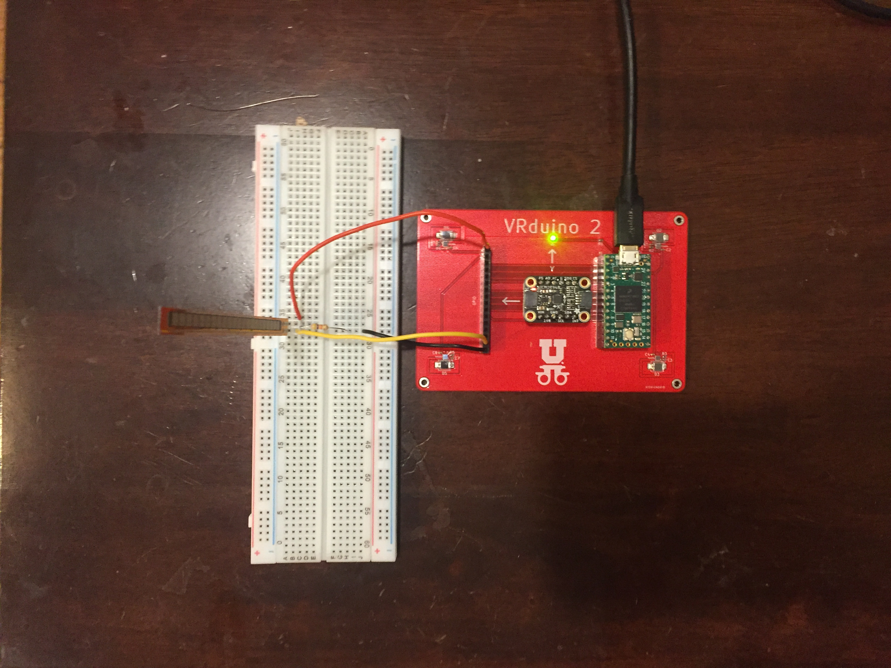
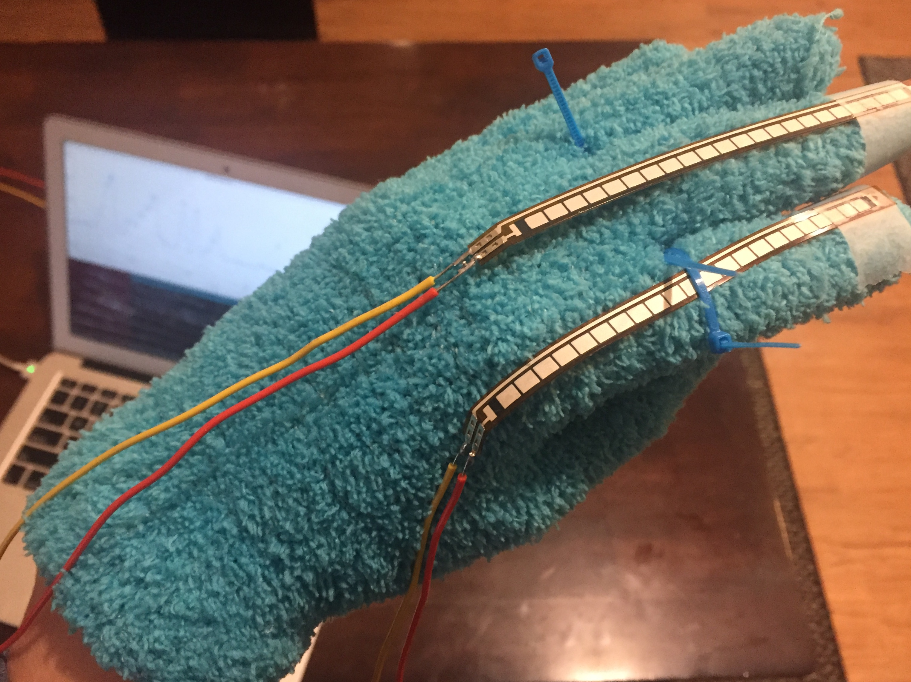
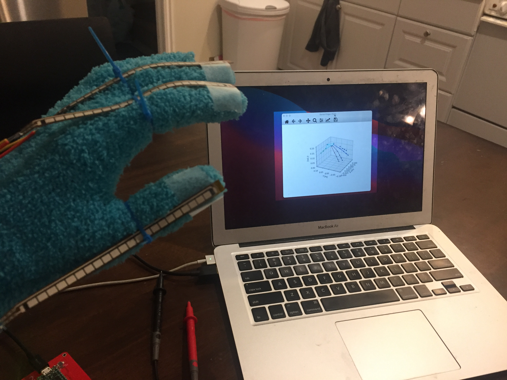
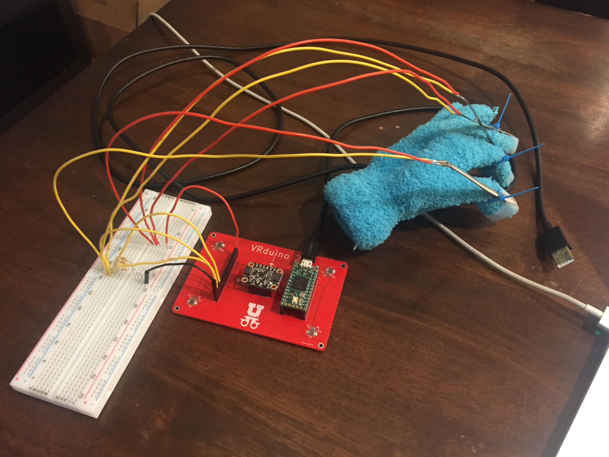

Finger Tracking
CS 6360, Fall 2021, University of Utah
Table of Contents
1. Press Kit
1.1. Factsheet
1.1.1. Team Name
Bradley Walters. Location: Salt Lake City, Utah, United States.
1.1.2. Release Date
13 December 2021
1.1.3. Platforms
VRduino v2, custom hardware by Eisen Montalvo for CS 6360 at the University of Utah. V1 implementation by Stanford’s EE 267.
1.1.4. Websites
https://bmwalters.github.io/finger-tracking/ (you are here!)
1.2. Pitch
This project is a custom glove input device that tracks finger flexion using off-the-shelf flex sensors. This project draws inspiration from the 1989 Power Glove and uses similar sensor technology; it also relates to a 2016 EE 267 project which performed wrist-and-forearm tracking using similar sensors. however I am instead performing finger tracking. The implementation of the project uses the same communication protocol as the open source LucidVR ecosystem in order to take advantage of existing tools such as pygloves.
1.3. History
I was inspired to take on this project to learn more about input methods in virtual reality. This offering of CS 6360 went into great detail on rendering and orientation tracking, but I wanted to explore more of the layer that allows humans to act on virtual worlds. I chose to implement finger tracking due to the availability of flex sensors and because the I wanted to attempt to replicate the Power Glove as it’s indisputably cool. Furthermore the ecosystem of open source finger tracking devices is quite small so I wanted to contribute while it is growing.
1.4. Features
- Retrieve raw resistance data which correlates with bending from flex sensors.
- Interpret sensor bend data as finger flexion angles from flex sensors mounted to a glove.
- Visualize finger orientation from the glove input device by connecting data to the existing ecosystem of finger tracking tech.
1.5. Video
The following is a feature highlight demonstrating the aforementioned features.
1.6. Images






1.7. Logo

Glove illustration by BJarts.
1.8. About
1.8.1. The Development Team
I chose to enroll in this course when I learned of it for a few reasons. I was enrolled in CS 6610 Computer Graphics last semester and I wanted to continue to learn more about applications of computer graphics. Furthermore I learned that this offering of the course involved building an HMD from scratch which I felt was (is!) an extremely cool opportunity. The other exploration I was able to do in the class including this finger tracking project served as a bonus.
1.8.2. Credits
The work as described was solo, however I plugged into a few existing projects to make the overall system:
- The VRduino v2 microcontroller was designed by Eisen Montalvo for CS 6360 based on the VRduino v1 design by Stanford’s EE 267 staff.
- The visualizations shown in the demo were generated using pygloves by Peter Walkington.
1.8.3. Contact
Feel free to contact me via any of the methods listed on my GitHub profile.
Additional Contact: Faculty Sponsor, Rogelio E. Cardona-Rivera, Ph.D. <rogelio@cs.utah.edu>